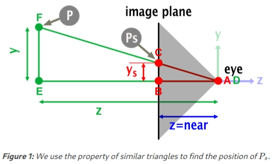
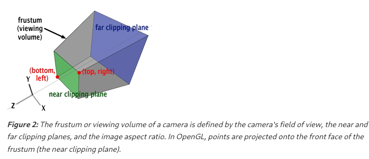
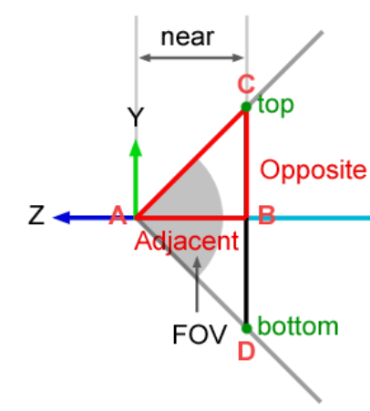
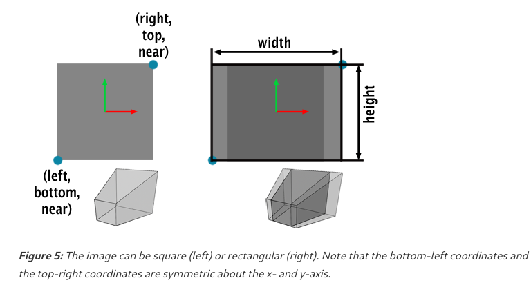

Perspective Matrix
Fundamentals
Let’s now examine how points are projected in OpenGL (or WebGL). A line is drawn from the camera’s origin to the point $P$ that we want to project, and the intersection of this line with the image plane determines the position of the projected point $P_s$. It’s important to note that in OpenGL, the image plane is situated on the near clipping plane.

The triangles $\Delta ABC$ and $\Delta DEF$ are similar. Thus, we can express:
$$ \begin{aligned} \frac{AB}{DE} = \frac{BC}{EF} \end{aligned} $$By substituting $AB$ with $n$ (the near clipping plane), $DE$ with $P_z$ (the z-coordinate of $P$), and $EF$ with $P_y$ (the y-coordinate of $P$), we can rewrite this equation as:
$$ \begin{aligned} \frac{n}{-P_z} = \frac{BC}{P_y} \end{aligned} $$And solving for $BC$ we obtain:
$$ \begin{aligned} BC = P_{sy} \frac{n \cdot P_y}{-P_z} \end{aligned} $$Note that since the camera is oriented along the negative z-axis, $P_z$ is negative, so, to maintain the sign of the y-coordinate, we negate $P_z$. Following the same logic, we derive the x-coordinate of the projected point with the following equation:
$$ \begin{aligned} P_{s_x} = \frac{n \cdot P_x}{-P_z} \end{aligned} $$Following the same reasoning for $P_y$, we obtain:
$$ \begin{aligned} P_{s_y} = \frac{n \cdot P_y}{-P_z} \end{aligned} $$Derivation
We need to figure out how $P_{sx}$ and $P_{sy}$ correlate with the WebGL perspective matrix. The purpose of a projection matrix is to remap the values projected onto the image plane to a unit cube (defined by minimum $(-1, -1, -1)$ and maximum $(1, 1, 1)$).
Projected X
Once the point $P$ is projected onto the image plane (near clipping plane), is considered visible if its and coordinates fall within the range $[left, right]$ for $x$ and $[bottom, top]$ for $y$, as depicted in Figure 2.

Such that:
$$ \begin{aligned} l \leq P_{sx} \leq r \end{aligned} $$where $l$ and $r$ are the left and right coordinates respectively. Our objective is to remap so that its final value resides within the range $[-1, 1]$:
$$ \begin{aligned} 0 \leq P_{sx} - l \leq r - l \end{aligned} $$normalizing by dividing by $r - l$ gives:
$$ \begin{aligned} 0 \leq \frac{P_{sx} - l}{r - l} \leq 1 \end{aligned} $$multiplying all terms by $2$:
$$ \begin{aligned} 0 \leq 2 \frac{P_{sx} - l}{r - l} \leq 2 \end{aligned} $$substracting $1$ from all terms results in:
$$ \begin{aligned} -1 \leq 2 \frac{P_{sx} - l}{r - l} - 1 \leq 1 \end{aligned} $$Now the central term on the inequality is defined to exist on the range $[-1, 1]$, which is what we wanted. With some further rearrangement:
$$ \begin{aligned} -1 \leq 2 \frac{P_{sx} - l}{r - l} - \frac{r - l}{r - l} \leq 1 \end{aligned} $$$$ \begin{aligned} -1 \leq \frac{2P_{sx} - 2l - r + l}{r - l}\leq 1 \end{aligned} $$$$ \begin{aligned} -1 \leq \frac{2P_{sx} - r - l}{r - l}\leq 1 \end{aligned} $$$$ \begin{aligned} -1 \leq \frac{2P_{sx}}{r - l} - \frac{r + l}{r - l}\leq 1 \end{aligned} $$The two central terms are quite similar to the first two terms of the first row in the WebGL perspective projection matrix. If we replace $P_{sx}$ from the previous equation with
$$ \begin{aligned} P_{sx} = \frac{n P_x}{-P_z} \end{aligned} $$we get:
$$ \begin{aligned} -1 \leq \frac{2nP_x}{-P_z(r - l)} - \frac{r + l}{r - l}\leq 1 \end{aligned} $$We can encode this equation in matrix form if we replace the first and third coefficients of the matrix’s first row with the first and second term of this formula:
$$ \begin{aligned} \begin{bmatrix} \frac{2n}{r - l} & 0 & \frac{r + l}{r - l} & 0 \\ \cdots & \cdots & \cdots & \cdots \\ \cdots & \cdots & \cdots & \cdots \\ 0 & 0 & -1 & 0 \end{bmatrix} \end{aligned} $$So computing $P_{sx}$ yields:
$$ \begin{aligned} \begin{bmatrix} \frac{2n}{r - l} & 0 & \frac{r + l}{r - l} & 0 \\ \cdots & \cdots & \cdots & \cdots \\ \cdots & \cdots & \cdots & \cdots \\ 0 & 0 & -1 & 0 \end{bmatrix} \cdot \begin{bmatrix} P_x \\ P_y \\ P_z \\ P_w \\ \end{bmatrix} \end{aligned} $$such that:
$$ \begin{aligned} P_{sx} = \frac{2n}{r - l} P_x + \frac{r + l}{r - l} P_z \end{aligned} $$And since $P_{sx}$ will be divided at the end of the process by $-P_z$ when we convert from homogeneous to Cartesian coordinates, we get:
$$ \begin{aligned} P_{sx} = \frac{\frac{2n}{r - l} P_x}{-P_z} + \frac{\frac{r + l}{r - l} P_z}{-P_z} = \frac{2nP_x}{-P_z(r - l)} - \frac{r + l}{r - l} \end{aligned} $$This is the first coordinate of the projected point $P_{s}$ computed using the WebGL perspective matrix.
Projected Y
The derivation for $P_{sy}$ is analogous, replacing $l$ and $r$ with and $b$ and $t$, such that:
$$ \begin{aligned} b \leq P_{s_y} \leq t \end{aligned} $$$$ \begin{aligned} 0 \leq P_{s_y} - b \leq t - b \end{aligned} $$$$ \begin{aligned} 0 \leq \frac{P_{s_y} - b}{t - b} \leq 1 \end{aligned} $$We multiply by $2$:
$$ \begin{aligned} 0 \leq 2\frac{P_{s_y} - b}{t - b} \leq 2 \end{aligned} $$And we substract $1$:
$$ \begin{aligned} -1 \leq 2\frac{P_{s_y} - b}{t - b} - 1 \leq 1 \end{aligned} $$$$ \begin{aligned} -1 \leq 2\frac{P_{s_y} - b}{t - b} - \frac{t - b}{t - b} \leq 1 \end{aligned} $$$$ \begin{aligned} -1 \leq \frac{2P_{s_y} - 2b - t + b}{t - b} \leq 1 \end{aligned} $$$$ \begin{aligned} -1 \leq \frac{2P_{s_y} - b - t}{t - b} \leq 1 \end{aligned} $$$$ \begin{aligned} -1 \leq \frac{2P_{s_y}}{t - b} - \frac{t + b}{t - b} \leq 1 \end{aligned} $$Given we know that:
$$ \begin{aligned} P_{s_y} = \frac{n P_y}{-P_z} \end{aligned} $$then:
$$ \begin{aligned} -1 \leq \frac{2n P_y}{-P_z(t - b)} - \frac{t + b}{t - b} \leq 1 \end{aligned} $$Therefore, now our projection matrix has the following shape:
$$ \begin{aligned} \begin{bmatrix} \frac{2n}{r - l} & 0 & \frac{r + l}{r - l} & 0 \\ 0 & \frac{2n}{t - b} & \frac{t + b}{t - b} & 0 \\ \cdots & \cdots & \cdots & \cdots \\ 0 & 0 & -1 & 0 \end{bmatrix} \end{aligned} $$Computing $P_{s_y}$ using this matrix gives:
$$ \begin{aligned} \begin{bmatrix} \frac{2n}{r - l} & 0 & \frac{r + l}{r - l} & 0 \\ 0 & \frac{2n}{t - b} & \frac{t + b}{t - b} & 0 \\ \cdots & \cdots & \cdots & \cdots \\ 0 & 0 & -1 & 0 \end{bmatrix} \cdot \begin{bmatrix} x \\ y \\ w \\ z \\ \end{bmatrix} \end{aligned} $$$$ \begin{aligned} P_{s_y} = 0 \cdot x + \frac{2n}{t - b} P_y + \frac{t + b}{t - b}P_z + 0 \end{aligned} $$and after the divsion by $-P_z$:
$$ \begin{aligned} P_{s_y} = \frac{\frac{2n}{t - b}P_y}{-P_z} + \frac{\frac{t + b}{t - b}P_z}{-P_z} \end{aligned} $$$$ \begin{aligned} = \frac{2n P_y}{-P_z(t - b)} - \frac{t + b}{t - b} \end{aligned} $$Projected Z
All that’s left to do to complete it is find a way to remap the z-coordinate of the projected points to the range $[-1,1]$
We know that the $x$ and $y$ coordinates of $P$ don’t contribute to the calculation of the projected point’s z-coordinate. Thus, the first and second coefficients of the matrix’s third row are necessarily zero. We are left with the following matrix:
$$ \begin{aligned} \begin{bmatrix} \frac{2n}{r - l} & 0 & \frac{r + l}{r - l} & 0 \\ 0 & \frac{2n}{t - b} & \frac{t + b}{t - b} & 0 \\ 0 & 0 & A & B \\ 0 & 0 & -1 & 0 \end{bmatrix} \end{aligned} $$If we write the equation to compute $P_{s_z}$ using this matrix, we get:
$$ \begin{aligned} P_{s_z} = \frac{0 \cdot P_x + 0 \cdot P_y + A \cdot P_z + B \cdot P_w}{P_{s_w} = - P_z} \end{aligned} $$$$ \begin{aligned} \frac{A \cdot P_z + B}{P_{s_w} = -P_z} \end{aligned} $$Note that we are dividing $P_{s_z}$ by $P_{s_w}$ when the point is converted from homogeneous to Cartesian coordinates, and that $P_w = 1$.
We need to find the values of $A$ and $B$. We know that when $P_z$ is on the near clipping plane, $P_{s_z}$ needs to be remapped to $-1$, and when $P_z$ is on the far clipping plane, $P_{s_z}$needs to be remapped to $1$.
So, when $P_z$ is on the near plane, the previous equation is as follows:
$$ \begin{aligned} \frac{A \cdot (P_z = -n) + B}{(-P_z = -(-n) = n)} = -1 \end{aligned} $$$$ \begin{aligned} \frac{A \cdot -n + B}{n} = -1 \end{aligned} $$$$ \begin{aligned} -nA + B = -n \end{aligned} $$And when $P_z$ is on the far plane:
$$ \begin{aligned} \frac{A \cdot (P_z = -f) + B}{(-P_z = -(-f) = f)} = 1 \end{aligned} $$$$ \begin{aligned} \frac{A \cdot -f + B}{f} = 1 \end{aligned} $$$$ \begin{aligned} -fA + B = f \end{aligned} $$These two equations form the following system of equations:
$$ \begin{aligned} \begin{cases} -nA + B = -n \\ -fA + B = f \end{cases} \end{aligned} $$We solve the first equation for $B$:
$$ \begin{aligned} B = -n + An \end{aligned} $$And we substitute on the second equation:
$$ \begin{aligned} -fA + (-n + An) = f \end{aligned} $$$$ \begin{aligned} A (n - f) = f + n \end{aligned} $$$$ \begin{aligned} A= -\frac{f + n}{f - n} \end{aligned} $$Finding $B$ is straightforward. We just replace $A$ in the first equation:
$$ \begin{aligned} B = -n + (-\frac{f + n}{f - n})n \end{aligned} $$$$ \begin{aligned} B = -n(1 + \frac{f + n}{f - n}) \end{aligned} $$$$ \begin{aligned} B = -n(\frac{f + n + f - n}{f - n}) \end{aligned} $$$$ \begin{aligned} B = -n(\frac{2f}{f - n}) \end{aligned} $$$$ \begin{aligned} B = -\frac{2fn}{f - n} \end{aligned} $$We can replace the solutions we found for A and B in our matrix, and we finally get:
$$ \begin{aligned} \begin{bmatrix} \frac{2n}{r - l} & 0 & \frac{r + l}{r - l} & 0 \\ 0 & \frac{2n}{t - b} & \frac{t + b}{t - b} & 0 \\ 0 & 0 & -\frac{f + n}{f - n}& -\frac{2fn}{f - n} \\ 0 & 0 & -1 & 0 \end{bmatrix} \end{aligned} $$The Field of View and Image Aspect Ratio
The field of view and the image aspect ratio are somehow related to the projection process. The construction of the matrix relies on six parameters: the left, right, bottom, and top coordinates, as well as the near and far clipping planes. The user provides the values for the near and far clipping planes, but how about the left, right, bottom, and top coordinates? What are these, where do they come from, and how do we calculate them?
Observing the following figure, you can see that these coordinates correspond to the lower-left and upper-right corners of the frustum front face, where the image of the 3D scene is projected:
The angle of view can either be defined vertically or horizontally. OpenGL tends to define the field-of-view as vertical (hence the Y in FOVY).
Computing the Coordinates
To compute the top coordinate, we look at the right-angled triangle $ABC$ on the following image.

The angle between by $AB$ and $AC$ is half the FOV. Also, the adjacent side of the triangle is the value for the near-clipping plane. Using trigonometry, we can express this as:
$$ \begin{aligned} \tan(\frac{FOVY}{2}) = \frac{opposite}{adyacent} = \frac{BC}{AB} = \frac{top}{near} \end{aligned} $$Therefore:
$$ \begin{aligned} top = \tan(\frac{FOVY}{2}) \cdot near \end{aligned} $$And since the bottom half of the camera is symmetrical to the upper half, we can state that:
$$ \begin{aligned} bottom = -top \end{aligned} $$
In Figure 5, two scenarios are considered: the image can either be square or rectangular. For a square camera, it’s straightforward: the left and bottom coordinates are the same, the right and top coordinates are also the same. Therefore:
$$ \begin{aligned} top = \tan(\frac{FOVY}{2}) \cdot near \end{aligned} $$$$ \begin{aligned} left = bottom = -top \end{aligned} $$$$ \begin{aligned} right = top \end{aligned} $$For a non-square camera, as shown in the right inside of figure 5, the bottom and top coordinates remain the same, but the left and right coordinates are scaled by the aspect ratio, defined as the image width over the image height. The general formulas for computing the left, right, and bottom coordinates are:
$$ \begin{aligned} aspect ratio = \frac{width}{heigth} \end{aligned} $$$$ \begin{aligned} top = \tan(\frac{FOVY}{2}) \cdot near \end{aligned} $$$$ \begin{aligned} bottom = -top \end{aligned} $$$$ \begin{aligned} right = top \cdot aspect ratio \end{aligned} $$$$ \begin{aligned} left = bottom \cdot aspect ratio \end{aligned} $$Note
This section is kinda important, up until now we have define this projection matrix on what we call row-major order. However, WebGL expects us to use matrices defined on column-major order. See Transposing Transformation or Projection Matrices on how to correctly defined these matrices.